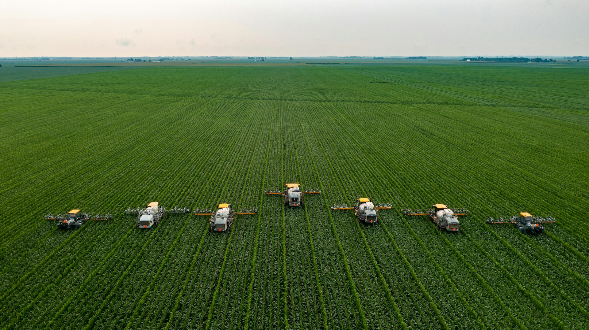
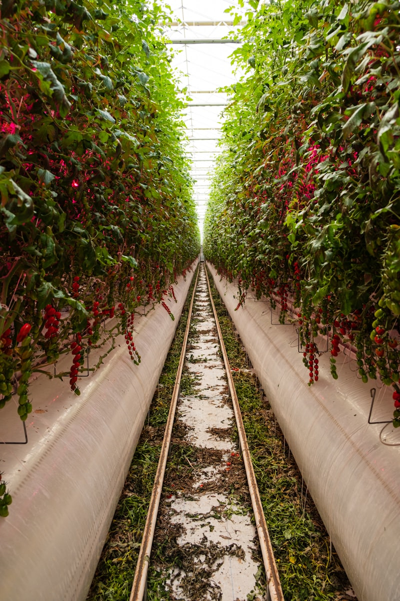

Como Alimentar Bilhões de Pessoas de Forma Sustentável?
Explorando os desafios e soluções para garantir segurança alimentar em um planeta com recursos limitados
O Desafio Global
Números que revelam a urgência de repensar nossa produção de alimentos
-
0Bi
População mundial atual
E deve chegar a 9,7 bilhões até 2050
-
0M
Pessoas em insegurança alimentar
Dados da ONU de 2024
-
0%
De toda comida produzida é desperdiçada
Dados da FAO
Produção Sustentável é Possível
Este projeto explora como a tecnologia, inovação e práticas sustentáveis podem transformar a agricultura para atender as demandas crescentes sem comprometer o futuro do planeta.
Através de métodos modernos como agricultura de precisão, hidroponia, inteligência artificial e agroecologia, podemos produzir mais com menos impacto ambiental.
Descubra como
+70%
Eficiência na produção